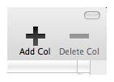

Delectus™
Delectus™A column is a vertical section of your list document with a label at the top. The label can be anything you like (as long as there isn't another column with the same label!), and you can add as many columns as you like to any Delectus document. You can also remove columns at any time.
To add a column, click the Add Col button at the top right corner of the Delectus window:

Click the Add Col button (it looks like a big black "plus" sign), and Delectus asks you for a label for the new column. It then creates the new column with the label you gave it.
Removing Columns
You can remove a column using the Delete Col button. Usually, the Delete Col button is grayed out, as it is in the illustration above. It becomes active only when you select a column by clicking its label at the top. When the Delete Col button is active, clicking it removes the selected column.
If you try it now, you might notice that as soon as you delete the column, the Trash Button at the bottom left corner of the window changes its appearance. Instead of an empty trash basket, it shows a full one. That's to let you know that the document has deleted items. If you click the Trash Button, it shows all the deleted items in red, and it displays the message, "Deleted items are red". Click it again, and the deleted items, and the message, disappear.
Emptying the Trash
You might be wondering, "why are those items still in the document, if I deleted them?" Delectus doesn't completely destroy them when you delete them. It keeps them around in the Trash, in case you delete something by mistake and want to get it back. If you really want to make sure that deleted items are gone forever, pull down the "File" menu and choose "Empty Trash." Delectus permanently removes all the items that are in the trash. Make sure you really want to remove them, because once Delectus empties the Trash, it has no way to get those items back.
Renaming Columns
What if you decide that you want to change one of the column labels? It's easy to do: click the label at the top of the column to select it, then pull down the "Edit" menu and choose "Rename Column". Delectus asks you for a new label. After it accepts the new label, it changes the column to use it in place of the old one. Remember: a document cannot have two columns with the same label.